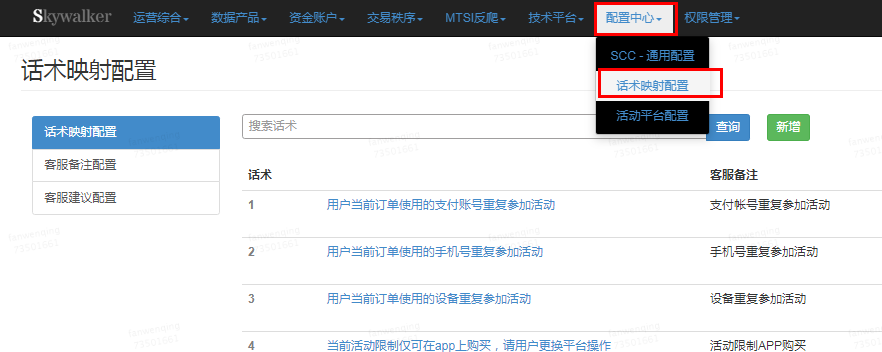
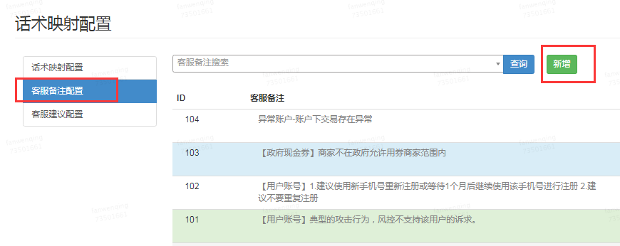
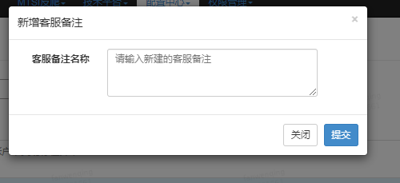
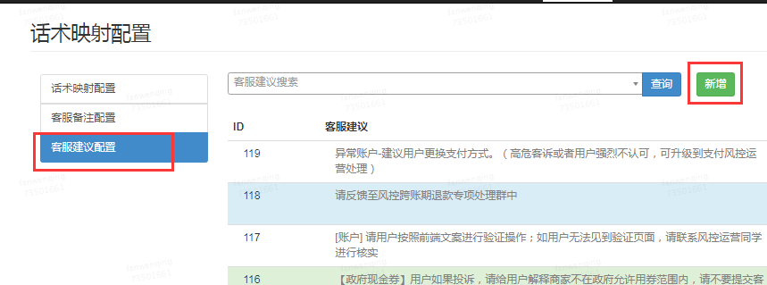
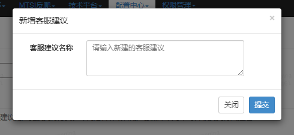
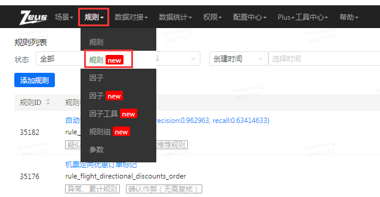
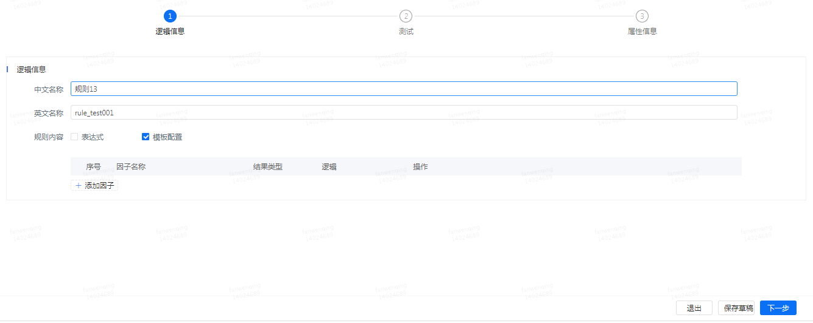
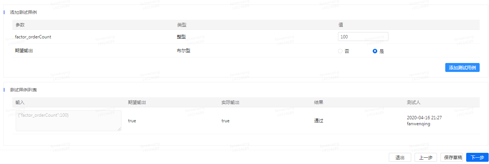
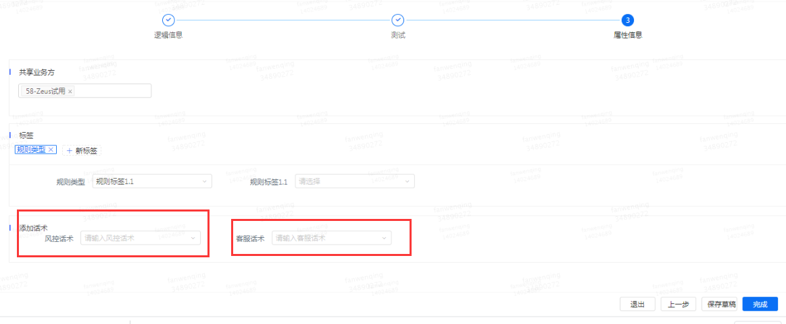

（旧版）说明：在规则中添加风控话术和客服话术
一、背景
需要补充
二、操作说明
1.第一步：先在skywalker上创建客服备注和客服建议（已迁移zeus，请见说明：话术管理）
skywalker上的客服备注：对应Zeus上的 风控话术，即风控命中原因，主要面向PM，同规则绑定；
skywalker上的客服建议：对应Zeus上的 客服话术，主要面向运营，同规则绑定；
1.1 入口
skywalker->配置中心->话术映射配置

1.2 创建客服备注
点击 客服备注配置->新增，进入 新增客服备注 页面，填写 客服备注名称，点击 提交，即完成客服备注的创建；


1.3 创建客服建议
点击 客服建议配置->新增，进入 新增客服建议 页面，填写 客服建议名称，点击 提交，即完成客服建议的创建；


2.第二步：在Zeus上为规则添加客服备注、客服建议
2.1 入口
规则—>规则

2.2 在创建规则的过程中添加话术和客服备注
（1）点击 添加规则 ，进入添加规则页面之后，首先填写规则逻辑信息（中文名称、英文名称、规则内容，具体填写说明详见说明：创建/修改规则），之后点击 下一步；

（2）添加测试用例，测试结果通过，点击 下一步；

（3）进入添加规则属性信息页面，在此页面的最后一项 添加话术 处，在风控话术后面的选择框中选择创建的风控话术（客服备注），在客服话术后面的选择框中选择创建的客服话术（客服建议），点击 完成，就完成了在创建规则的过程中添加话术和客服备注；

2.3 在修改规则的过程中添加话术和客服备注
（1）同添加规则入口一样，进入规则页面，在规则列表中找到已经创建的规则，点击规则中文名称，进入更新规则详情页面，点击 编辑，即可按照刚刚添加规则的流程对规则进行修改，不需要修改规则的逻辑信息和测试，直接点击 下一步 跳到 规则的 属性信息 修改页面，在此页面的最后一项 添加话术 处，在风控话术后面的选择框中选择创建的风控话术（客服备注），在客服话术后面的选择框中选择创建的客服话术（客服建议），点击 完成，就完成了在修改规则的过程中添加话术和客服备注；